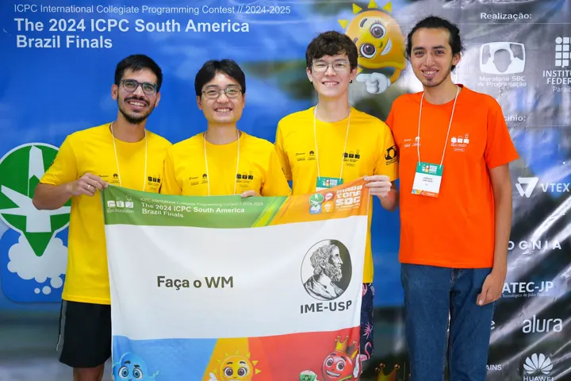
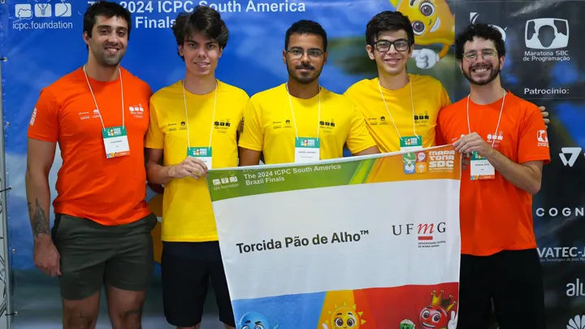
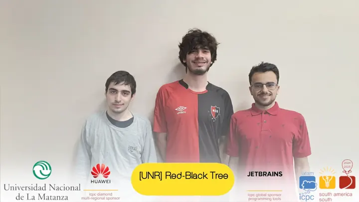
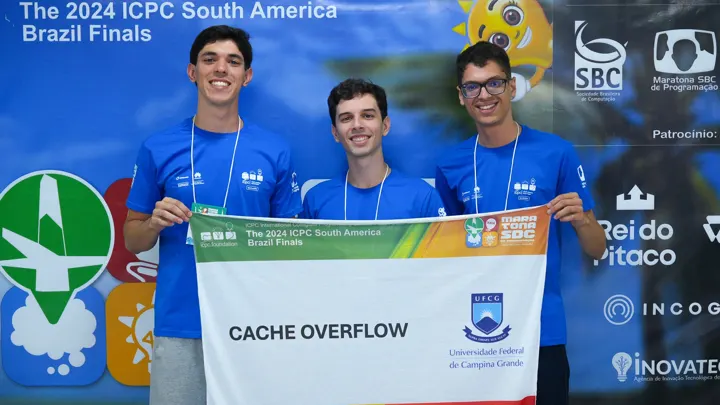
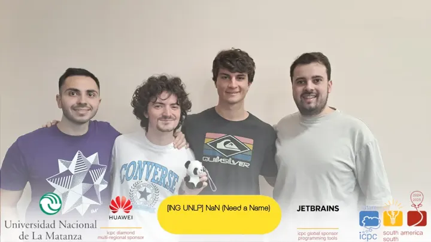
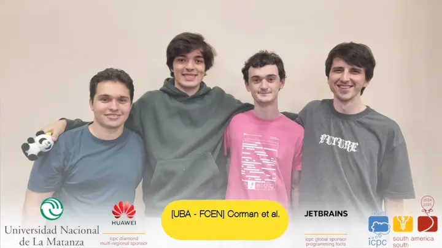
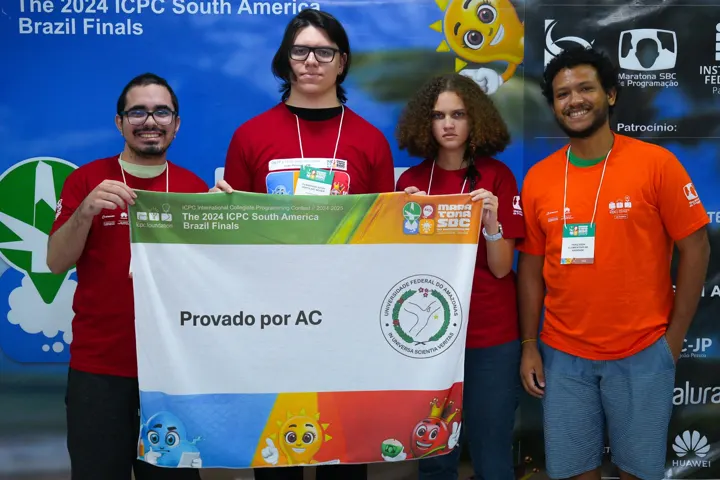
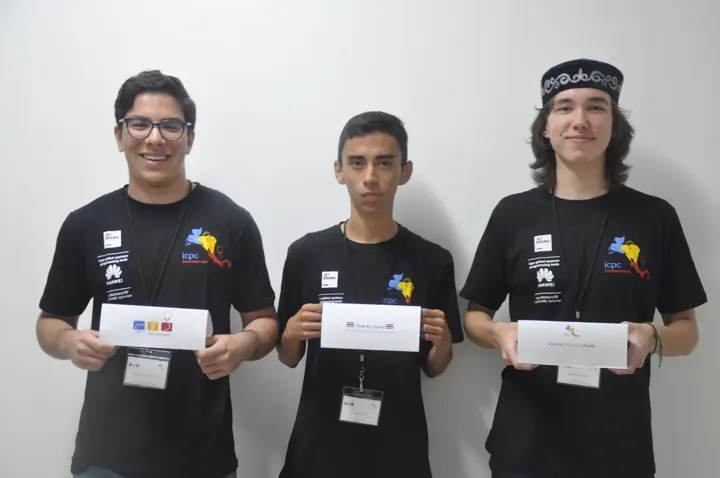

icpc.latam->regionals(LAR2024)
The 2024 ICPC Latin America Regionals was held on Saturday November 9th, 2024
Official Rules
Systems
Registered Teams
Registered & Accepted teams at icpc.global website:
Streamings
 João Pessoa
João Pessoa
 Santiago de los Caballeros
Santiago de los Caballeros
 Buenos Aires
Buenos Aires
 Coquimbo
Coquimbo
 Monterrey
Monterrey
 Ciudad de Guatemala
Ciudad de Guatemala
 Mayagüez
Mayagüez
 Alajuela
Alajuela
 Tarija
Tarija
- Youtube link (not available)
 San Salvador
San Salvador
 Bogotá
Bogotá
- Youtube link (not available)
Official Results
- Teams on the final scoreboard 490

USP – Faça o WM
- 🥇 Global winner of the Regionals
- Problems solved: 9 (1171 penalty minutes)
Global top 10
| # | Team | Solved | Penalty | |
|---|---|---|---|---|
| 1 | 9 | 1171 | ||
| 2 |  UFMG · Torcida Pão de Alho™ | 8 | 1184 | |
| 3 |  UNR · Red-Black Tree | 7 | 709 | |
| 4 | UNAL Bogotá · UN pasito tUN tUN | 7 | 1089 | |
| 5 | ESCOM IPN · Enchiladas con patas | 6 | 438 | |
| 6 |  UFCG · CACHE OVERFLOW | 6 | 509 | |
| 7 |  ING UNLP · NaN (Need a Name) | 6 | 718 | |
| 8 |  UBA - FCEN · Corman et al. | 6 | 731 | |
| 9 |  IComp/UFAM · Provado por AC | 6 | 750 | |
| 10 | ESCOM IPN · No se nos ocurrio un nombre | 6 | 831 |
Top 10 of 490 ranked teams. Full scoreboard and problemset at ScoreLatam.
Best team of each region
| Region | Best team | Solved | Penalty | Global # | Teams |
|---|---|---|---|---|---|
| Brazil | 9 | 1171 | 1 | 63 | |
| Mexico | ESCOM IPN · Enchiladas con patas | 6 | 438 | 5 | 116 |
| Central America |  ITCR-Alajuela · Todo Es mental | 4 | 330 | 86 | 45 |
| Caribbean | INTEC · #Pray4Mark | 4 | 457 | 113 | 23 |
| South America/North | UNAL Bogotá · UN pasito tUN tUN | 7 | 1089 | 4 | 56 |
| South America/South | 7 | 709 | 3 | 187 |
Maratona SBC reports 524 participating teams (65 in the Brazilian final, 120 in Mexico, 46 in Central America, 23 in the Caribbean, 56 in South America/North and 219 in South America/South), 26 of them made of three women. The Brazilian final was hosted by IFPB in João Pessoa.
Source: Maratona SBC de Programação – history and ScoreLatam
Standings at icpc.global website:
- The 2024 ICPC Mexico Finals
- The 2024 ICPC Central America Finals
- The 2024 ICPC Caribbean Finals
- The 2024 ICPC South America-North Finals
- The 2024 ICPC South America/South Finals
- The 2024 ICPC South America/Brazil Finals